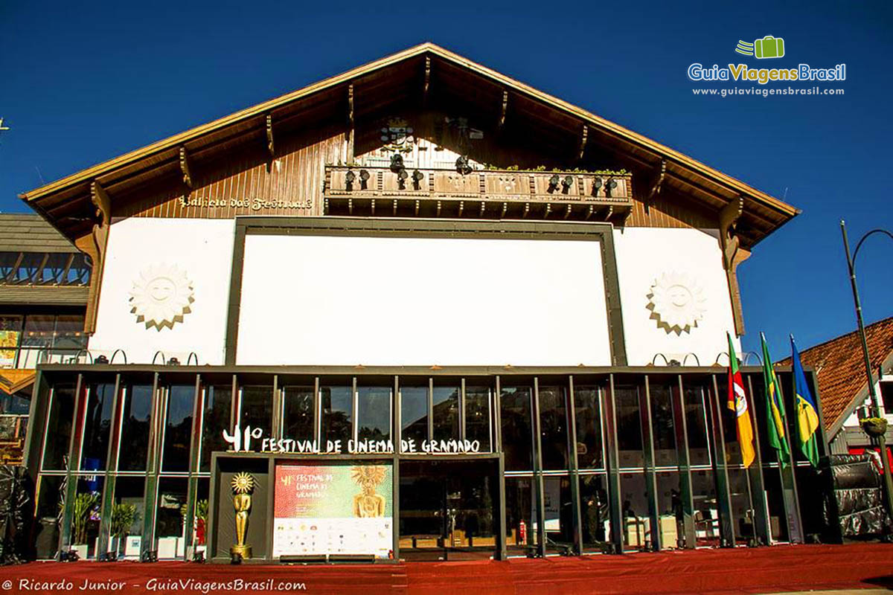
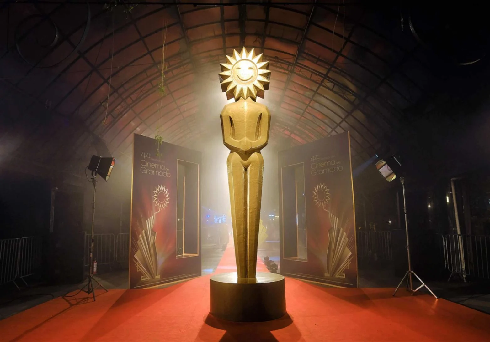
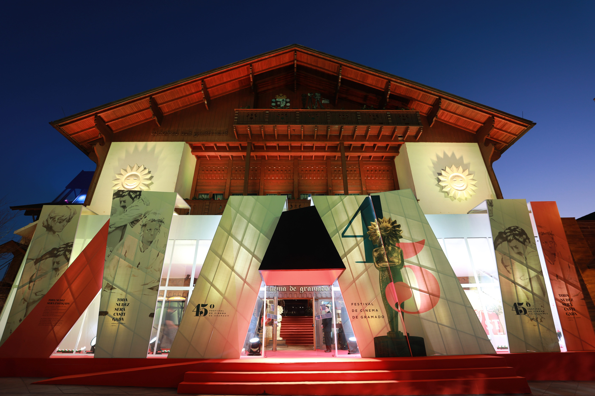
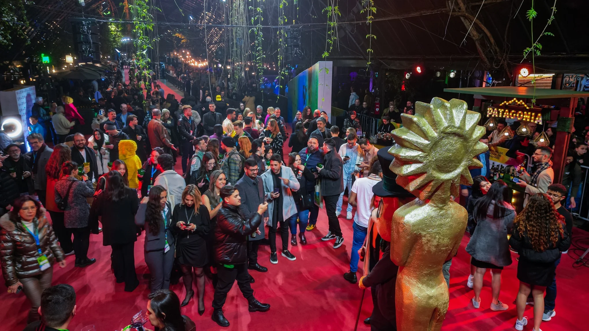
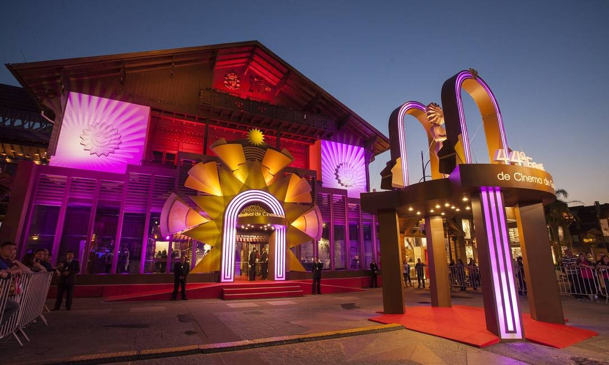
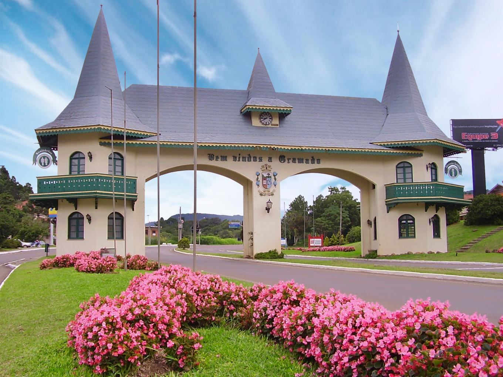
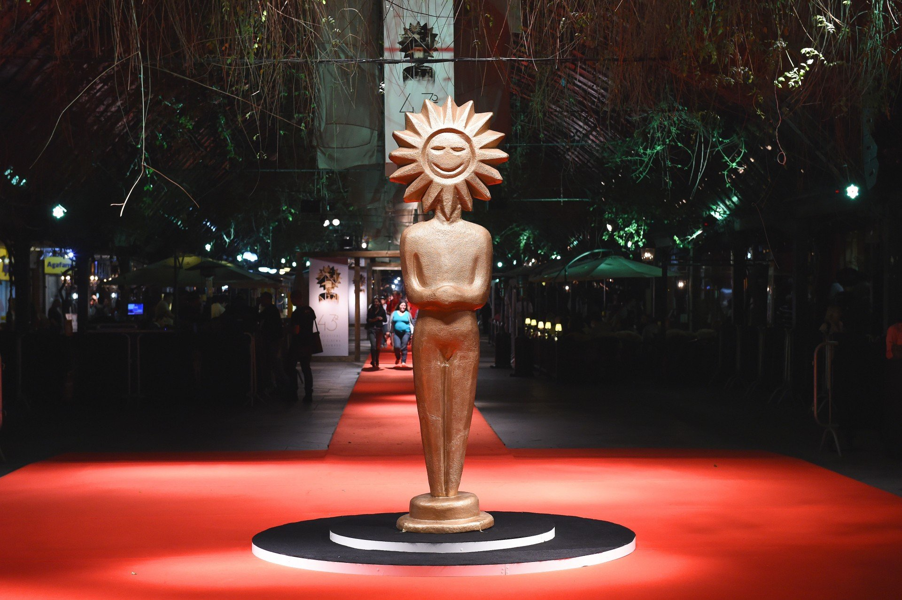

Bem-vindo ao Festival de Cinema de Gramado
O Festival de Cinema de Gramado é um dos principais eventos cinematográficos do país, proporcionando uma experiência única para cinéfilos e profissionais do setor.
Descubra os filmes selecionados, participe das atividades paralelas e garanta seu lugar nas sessões de cinema!
Veja a Programação






